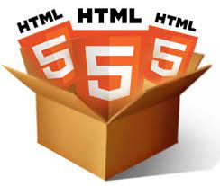

|  |
HTML adalah bahasa markup yang paling sering digunakan dalam pembuatan website. Sejak mulai mengudara di 2014, versi kelima HTML telah digunakan secara luas. Akan tetapi, sudah tahukah Anda apa itu HTML5 Baca Selengkapnya... |
Pada jaman sekarang kita dituntut untuk mengerti tentang manfaat dari jaringan karena jaringan adalah sebuah interkoneksi yang menghungkan kita untuk mengetahui dunia. Bukan hanya untuk itu saja tapi jaringan sangan penting untuk kita bergaul dan untuk mengetahui persaingan dalam sebuah bisnis. Banyak informasi di dunia maya yang menjadikan kita untuk terus berkembang, kali ini saya akan mejelaskan Baca Selengkapnya... |
|

|
CSS adalah bahasa Cascading Style Sheet dan biasanya digunakan untuk mengatur tampilan elemen yang tertulis dalam bahasa markup, seperti HTML. CSS berfungsi untuk memisahkan konten dari tampilan visualnya di situs. CSS dibuat dan dikembangkan oleh W3C Baca Selengkapnya... |
Semakin berkembangnya internet di Indonesia, semakin banyak pula yang mengenal website. Website adalah apa yang Anda kunjungi setiap hari di internet. Dari Google, Facebook, Twitter, CNN, Kompas, Tokopedia, Bukalapak, hingga Blog Niagahoster yang sedang Anda baca sekarang. Ketika Baca Selengkapnya... |